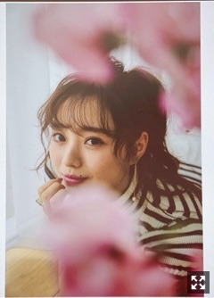
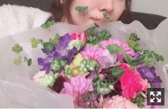
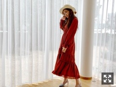
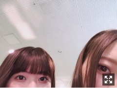
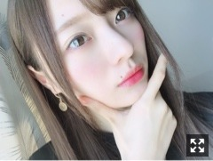

追いつかないまま過ぎていってしまう
みなさまこんにちは！
お久しぶりになってしまいました、、
書きたいことがたくさん( .. )
新年号が令和に決定しましたね！
みんなで画面の前に集まって
発表の瞬間を迎えました！
歴史的瞬間に立ち会えた嬉しさ( .. )
令和、すごく素敵ですね！！
予想してみたものの
全然当たらなかった（笑）
平成もあと一ヶ月かあ、寂しいなあ
そして４月になりましたね〜
新入生の方や新社会人の方、
おめでとうございます！
新しい環境へ足を踏み入れる方が
たくさんいるかと思います。
期待と不安を抱いてみんなそれぞれの夢や目標に向かって生きていくんだな〜
春は出会いと別れの季節であり
わたし的に少し寂しさも感じる季節だけど
前向きになれる気がして好きです！
４月の１日は
お仕事の合間にみりあさんとご飯へ行きましたよ〜お久しぶりだったのです
相変わらずみりあさんといると
おかしなテンションになる梅澤です。
それだけ心が許せるってことです◎
なんでも話せちゃいます
歩いてたら桜が沢山だったので
2人でお花見気分でした◎
お知らせです◎
この度、２８日発売の
ファッション誌「with」5月号から
専属モデルを努めさせて頂くことになりました！

皆様の応援があったからこそです。
本当にありがとうございます！
何度か出させて頂いてから、
初めてのファッション誌のロケ撮影だったり
ストーリー仕立ての撮影で
初めてのことをたくさん経験させて頂き、撮影では毎回色んなことを学びました
そして以前から読んでいた雑誌。
いつかこんな大人な女性になりたいな〜って、
そんな風に思っていました。
なのですごく嬉しいです！(；；)
不安もたくさんありますが、
with読者の皆様に
素敵なファッションやメイクをお届けできるよう
これから頑張っていきたいです。
コンプレックス、たくさんあります
顔も体も、コンプレックスだらけです。（笑）
だけど、
どんな自分も受け入れて
色んな私を誌面で見て頂けるように
精一杯努めさせて頂きます！！

口元しかうつってないですが(；；)
専属決定後初の撮影を終えた時
編集部の方々に頂いたお花です。
本当に優しい方ばかりで、幸せです
最後に頂いた言葉を胸に、
精一杯務めて参ります！！！
握手会でたくさんお祝いしてくださって
とっても幸せでした。
自分の事のように喜んでくれる人が
こんなに沢山いるんだなって
私だけの人生じゃないなって思いました
いつもありがとうございます！

今後ともぜひよろしくお願い致します！
そして
乃木坂46 梅澤美波の「のぎぼき！」
3月28日をもって終了致しました。
聴いてくださったリスナーの皆様、
本当にありがとうございました！
半年間に渡って、月曜から金曜まで
毎日短い時間の中でたくさんの情報をお届けしてきました。
もう半年も経っていたのか！と
時間の流れの速さに驚いています( .. )
簿記を習っている学生さんや
普段お仕事をされている方々の力に
少しでもなれればなあという想いで、
澤さん、そしてスタッフの皆様と取り組んで参りました！
握手会で、
簿記の検定受けることにしたよ！とか
検定合格したよ！とか
簿記興味持って始めてみましたとか
いろんな声を聞いて
少しでも力になれてるんだなって
本当に嬉しくて仕方なかったです
初めは緊張していたけど
回数を重ねるうちにかなり楽しくなり
いつからか私の一つのホームみたいな場所になりました
頼りない私でしたが、、
解説を含め分かりやすくラジオを作ってくださった澤先生、スタッフの方々には
本当に感謝しています。
半年間、聴いてくださった皆様
本当にありがとうございました！

メールにも送りましたが
れんかちゃんです
かわいいれんかちゃんです
今日も可愛かったれんかちゃんです
わたしはもう甘々です、、参った参った
先日、ゆうりさんとかりんさんの
卒業発表がありました。
ゆうりさんは
いつも笑顔をたくさんくれました。
帰り道の2番の振りで、
向き合って目が合うところがあるんです、
そこでいつもニコッとしてくれる
ゆうりさんが本当に大好きで(；；)
ゆうりさんがいるだけで
場の雰囲気が明るくなります。
かりんさんは
いつもたくさんのことを教えてくれました。
3期生を集めて振りを残って教えてくれたり、
振りの動画を撮って送ってくださったり
今思えば助けて頂いたエピソードがたくさん浮かんできます
壁を作らず接してくれるのが
本当に嬉しくて仕方なかったです。
すごくすごく寂しいけど
残りの時間を大切に
笑顔で見送れたらいいなあ。
当たり前が当たり前でなくなる瞬間が
この世にいくつも存在することを
信じたくなくて必死にもがきます
寂しさはきっとずっと拭えないけど
先輩達が残してくださったものを
私たち後輩が受け継いでいって
乃木坂がずっとずっと愛されるグループであれるように
私達もなにかを残せる人であれるように
今は頑張るのみです。

髪色落ちるスピード早すぎて困ってます
髪質なのでしょうか、、
だいぶ髪も伸びました
これ以上伸びてくれません
人生ほとんどロングなので
ショートに憧れます
ショートカット似合う人が本当に素敵だなぁって思います
わたしはきっと絶望的に似合わないので、、
それでは今日はこの辺で
泡風呂に浸かってきます
お風呂の時間が好きです
おやすみなさい
握手会のこと全然かけてなくてごめんなさい！
次の更新でまとめて書きます！
書きたいこと沢山あるので
徐々に更新していきますね！
Original：https://www.nogizaka46.com/s/n46/diary/detail/49861?ima=4944&cd=MEMBER